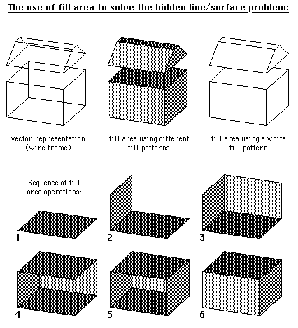
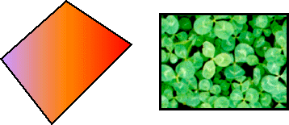

Previous
-- Next
FILL AREA
The graphics output primitive 'Fill Area' fills a 2D polygon with a given pixel pattern or a given color. Polygons are filled in the sequence they are drawn. Previously filled areas in the bitmap may be 'over-painted' by subsequent fill operations.


- also called "The Painter's Algorithms"
- requires transformation of 3D polygons into 2D polygons
- requires sorting of polygons before filling
- uses 'over-painting' to hide invisible lines and surfaces
- works only for simple topology
Polygons can also be filled with a varying color (e.g., representing changing light reflection) or with any content of a bitmap (e.g., scanned photographs, textures. etc.)

Previous
-- Next